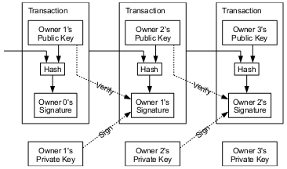
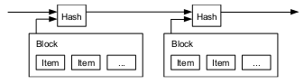
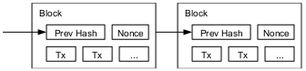
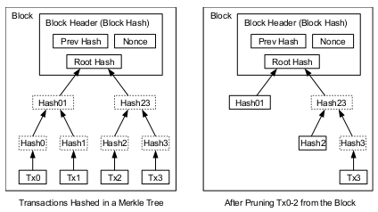
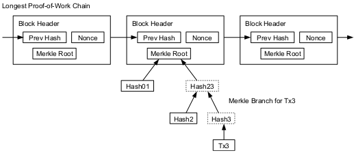
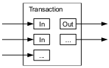
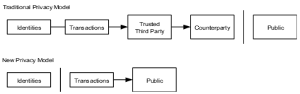
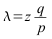
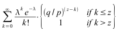
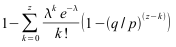

Za razumevanje članka je priporočljivo poznavanje omrežnih tehnologij, kriptografskih algoritmov in kriptografije javnega ključa.
Uživajte v branju tega genialnega dela...
Satoshi Nakamoto satoshin@gmx.com www.bitcoin.org
Pravilna implementacija p2p digitalnega denarja bi omogočala direktna plačila med dvema subjektoma brez vpletenosti finančne institucije. Uporaba elektronskega podpisovanja je del rešitve, vendar so njene prednosti brezpredmetne, dokler je verodostojna tretja oseba še vedno primorana da manualno preprečuje 'dvojno zapravljanje' (angl: double-spending).
Predlagamo rešitev za problem dvojne porabe, z uporabo p2p omrežja.
Omrežje časovno označuje transakcije, tako, da jih zgosti (hash) z tekočo verigo zgoščenih proff-of-work podatkov. To formira javni zapis, ki ne more biti spremenjen brez ponovnega proff-of-work-a. Najdaljša veriga ne služi samo kot dokaz zaporedja zabeleženih dogodkov, temveč tudi kot dokaz da prihaja iz najmočnejšega bazena procesorske moči. Če je večina procesorske moči v rokah poštenih vozlišč, ki ne sodelujejo pri napadu na omrežje, bodo generirali najdaljšo verigo in tako vedno bili pred napadalci. Omrežje zahteva zgolj minimalno strukturo. Sporočila so oddajana kakršne so pač zmožnosti in vozlišča lahko omrežje zapustijo in se kadarkoli lahko pridružijo nazaj, tako, da sprejmejo najdaljšo verigo kot dokaz/zapis kaj se je dogajalo med tem ko so bila odsotna.
Trgovina in storitve na internetu se morajo popolnoma zanesti na finančno institucijo, ki služi kot verodostojna tretja oseba, da obdela ('sprocesira') elektronska plačila. Medtem ko sistem deluje zadovoljivo za večino transakcij, vseeno ima slabost - model zaupanja. Popolnoma ne-povratne transakcije dejansko niso možne, ker se finančne institucije ne morejo izogniti posredovanju med spori. Stroški tega posredovanja povečujejo stroške transakcij, kar povzroči visoko minimalno velikost transakcije in onemogoča majhne vsakdanje transakcije. Tu so tudi stroški zaradi izgube možnosti izvajanja ne-povratnih plačil za ne-povratne storitve. Z možnostjo povratne transakcije (angl: charge-back), se povečuje potreba po zaupanju. Tako mora trgovec imeti določene podatke o svojih strankah in jih nadlegovati za več informacij, kot bi jih sicer rabil. Določen odstotek finančnih prevar je sprejet kot neizogiben. Strošku/tveganju plačilne negotovosti se lahko izognemo z uporabo fizične valute (gotovina), ne obstaja pa noben sistem, ki bi omogočal plačila čez komunikacijske kanale brez tretje osebe.
Potrebujemo elektronski plačilni sistem baziran na kriptografskem dokazu namesto na zaupanju, ki bi omogočal transakcijo med dvema osebama brez potrebe po verodostojni tretji osebi. Transakcije, ki so računsko nepraktične v obratni smeri, bi zaščitile trgovce pred goljufijami, rutnski hrambni mehanizmi pa se lahko implementirajo, da zaščitijo tudi kupce. V tem dokumentu predstavljamo rešitev na problem dvojnega trošenja (double-spending) z uporabo distribuiranega peer-to-peer timestamp strežnika za generiranje računskega dokaza o kronološkem zaporedju transakcij. Sistem je varen dokler je procesorska moč dobronamernih uporabnikov večja od procesorske moči napadalcev.
Definiramo elektronski kovanec kot verigo digitalnih podpisov. Vsak lastnik pošlje kovanec naslednjemu tako, da digitalno podpiše zgoščeno vrednost prejšnje transakcije in javni ključ naslednjega lastnika ter to zapiše na konec kovanca. Prejemnik lahko z verifikacijo podpisov verificira verigo lastništva.
Problem je seveda, ker prejemnik ne more potrditi, da lastnik kovanca le tega ni že zapravil. Običajna rešitev je, da dodamo verodostojno centralno avtoriteto, ali 'mint', ki preveri vsako transakcijo, če ne gre za 'double-spending' (dvojno trošenje). Pri vsaki transakciji, se kovanec vrne k mint-u, ki izda nov kovanec in samo kovanci, ki so izdani s strani mint-a so vredni zaupanja, da niso bili dvojno zapravljeni. Problem pri tej rešitvi je, da je usoda celotnega denarnega sistema odvisna od podjetja, ki služi kot 'mint' in da mora vsaka transakcija iti čez njih, tako kot gre v obstoječih finančnih mehanizmih čez banko.
Potrebujemo način, da bo prejemnik lahko zagotovo vedel, da prejšnji lastnik kovanca ni že podpisal kake predhodne transakcije. Za naš namen šteje samo zadnja/najkasnejša transakcija, torej nas ne zanimajo kasnejši poskusi 'double-spendinga'. Edini način, da se potrdi obstoj neke transakcije, je, da smo seznanjeni z vsemi obstoječimi transakcijami. V modelu, ki bazira na mint-u, je mint tisti, ki je seznanjen z vsemi transakcijami in odloča o tem katera je prišla prej. Da to dosežemo brez mint-a, morajo biti transakcije javno objavljene [1], potrebujemo pa sistem, da se udeleženci strinjajo z eno zgodovino po katerem vrstnem redu so transakcije prihajale. Prejemnik potrebuje dokaz, da se v trenutku vsake transakcije, večina vozlišč strinja, da se pred njo že ni zgodila transakcija z istimi kovanci.
Rešitev, ki jo predstavljamo ze začne z dnevniškim strežnikom (timestamp server). Ta deluje tako, da vzame zgoščeno vrednost bloka nekih podatkov, ki jih časovno označi in javnosti naznani zgoščeno vrednost, kot da bi jo na primer objavil v časopisnem ali internetnem članku. Časovna označba je dokaz, da so ti podatki obstajali v dotičnem trenutku, kar je očitno saj drugače nebi prišli v hash bloka. Vsaka označba vsebuje prejšnjo označbo v svoji zgoščeni vrednosti, kar formira verigo, ki z vsako novo označbo bolj potrjuje ostale pred njo.
Za implementacijo distribuiranega dnevniškega strežnika na p2p osnovah, potrebujemo 'proof-of-work' (slov: 'dokaz dela') sistem podoben HashCash-u [6], ki ga je predstavil Adam Back, namesto časopisnih in internetnih člankov. Proof-of-work vsebuje iskanje neke naključne vrednosti 'nKo' (angl: 'nonce'), ki bi zgoščena, recimo z SHA-256 vrnila hash ('zgoščeno vrednost') ki se začne z določenim številom bitov 0. Povprečno računsko delo, ki je potrebno je eksponentno glede na potrebno količino bitov 0, dokaže pa se zelo lahko - z eksekucijo ene same zgoščevalne procedure (hash).
Za naše dnevniško omrežje, moramo implementiranti proof-of-work, tako da povečujemo nKo vrednost nekega bloka, dokler ni najdena vrednost, ki daje bloku potrebno število bitov 0. Ko je računalniško delo zadostno, da zadovoljuje proof-of-work, se blok ne more več spreminjati, ne da bi se ponovno naredilo delo. Ker so torej bloki povezani v verigo, bi bilo za spremembo bloka potrebno oddelati tudi proof-of-work za vse bloke, ki pridejo za njim.
Proof-of-work tudi reši problem določanja reprezentacije večinskega odločanja. Če se vzorec večine vzame po pravilu 'en IP en glas', bi utegnil biti ogrožen z nekom ki lahko alocira veliko IP naslovov. Proof-of-work deluje po načelu en-CPU-en-glas. Večinsko odločanje je predstavljeno z najdaljšo verigo, ki je tudi največji dokaz vloženega dela. Če večino CPU moči predstavljo dobronamerni uporabniki, potem bo dobronamerna veriga rasla in prevladala nad ostalimi verigami. Za spremembo preteklega bloka bi moral napadalec ponovno oddelati proof-of-word dotičnega bloka in vseh blokov za njim, ujeti in prehiteti verigo verodostojnih (poštenih) vozliš. Kasneje bomo prikazali, da se verjetnost počasnejšega napadalca eksponentno zmanšuje ob dodajanju novih blokov.
Da nadomestimo/popravimo povečanje skupne hitrosti v omrežju ter različne interese vozlišč, se težavnost nastavi glede na drseče povprečje (moving average) povprečnega števila blokov na uro. Če so ustvarjeni prehitro se težavnost poveča.
Protokol za poganjanje takega omrežja je sledeč:
1) Nove transakcije so najavljene vsem vozliščem.
2) Vsako vozlišče shranjuje nove transakcije v blok.
3) Vsako vozlišče poskuša najti zahteven proof-of-work za svoj blok.
4) Ko neko vozlišče uspe izračunati proof-of-work, odda nov blok vsem vozliščem.
5) Vozlišča sprejmejo blok samo, če so vse transakcije v njem veljavne in ne že zapravljene (double-spending).
6) Vozlišča izrazijo svoje sprejetje bloka, tako, da delajo na novem bloku v verigi z uporabo zgoščene vrednosti (hash) sprejetega bloka kot
osnovo za začetek novega bloka.
Vozlišča vedno smatrajo najdaljšo verigo kot veljavno in delajo na nadaljevanju le te. Če dve vozlišči oddata različni verziji bloka istočasno, nekatera vozlišča prej sprejmejo eno, druga drugo. V tem primeru, vozišče dela na prvi, ki jo je sprejelo, vseeno pa si shrani drugo, za primer, če ta postane daljša. To se prekine, ko je najden naslednji proof-of-work in ena veriga postane daljša; vozlišča, ki so delala na drugi se potem prestavijo na daljšo verigo.
Ko je oddana nova transakcija, ne rabi biti nujno oddana vsem vozliščem. Če le dosežejo večino vozlišč, bodo slej ali prej prišle v blok. Tudi pomanjkanje sporočila o novem bloku ni problematično. Če vozlišče ne izve za nek blok, ga bo zahtevalo, ko izve za naslednji blok, ker bo ugotovilo, da mu eden manjka.
Pravilo je, da je prva transakcija v bloku posebna transakcija, ki poplača lastnika bloka in v omrežje sprosti nove kovance. To vozliščem da spodbudo, da podpirajo omrežje in hkrati ustvari način kako distribuirati kovance v cirkulacijo, saj ni centralne avtoritete, ki bi jih izdajala. Vprašanje količine novih kovancev ob vsakem bloku je podobno vprašanju rudarjev zlata, ki porabljajo svoje vire, da dodajajo zlato v obtok. V našem primeru so ti viri elektrika in CPU čas.
Spodbuda za delo se lahko financira tudi s pomočjo provizij pri transakcijah. Če je izhodna vrednost transakcije manjša, kot vhodna vrednost, je razlika provizija, ki se doda nagradi bloka, ki bo vseboval to transakcijo. Ko bo prednastavljeno število kovancev že v obtoku, lahko vzpodbuda osanejo samo provizije transakcij, tako se omrežje popolnoma izogne inflaciji.
Spodbuda tudi vzpodbuja vozlišča, da so poštena / verodostojna. Če bi napadalec imel več CPU moči, kot vsa ostala vozlišča, bi moral izbrati med goljufanjem ljudi (kraja svojega plačila nekomu) ali uporabiti to CPU moč za generiranje novih kovancev. Verjetno bo bolj profitabilno, da igra po pravilih, ki njemu namenjajo več kovancev kot ostalim, namesto da zlorabi sistem in ogrozi veljavnost tudi njegovega lastnega imetja.
Ko je neka trasakcija 'zakopana' pod dovolj bloki, se lahko transakcija, ki je bila zapravljena pred njo z istim kovancem izbriše, da se prihrani prostor na diskih. Da to dosežemo, brez da prekinemo verigo, so transakcije zgoščene v Merklovem drevesu [7][2][5], tako da je samo koren vsebovan v zgoščeni vrednosti bloka. Stari bloki so torej lahko stisnjeni, tako da jim 'porežemo' veje drevesa. Ostale zgoščene vrednosti drevesa ne rabijo biti shranjene.
Glava bloka brez transakcij znese okoli 80 bytov. Če prepostavljamo, da se bloki generirajo vsakih 10 minut: 80 bajtov * 6 * 24 * 365 = 4,2 MB leto. Z računalniškimi sistemi, ki se navadno prodajajo z 2GB spomina (2008) in Moore-ov zakon predvideva rast 1.2GB na leto, hramba podatkov nebi smela biti problem, tudi če morajo biti glave blokov vsebovane v spominu.
Ali je možno verificirati plačila brez, da poganjamo vozlišče. Uporabnik mora hraniti samo kopijo glav blokov najdaljše verige, katero lahko pridobi z povpraševanjem ostalih vozlišč, dokler ni prepričan, da ima najdaljšo verigo. Potem samo pridobi Merklovo vejo, ki povezuje transakcijo z blokom v katerem je vsebovana. Transakcijo lahko preveri, tako da jo poveže z njenim mestom v verigi, kar mu pove, da jo je to vozlišče sprejelo, bloki dodani kasneje pa potrjujejo, da jo je sprejelo tudi omrežje.
Tako torej je verifikacija zanesljiva dokler poštena vozlišča kontrolirajo omrežje. Omrežje pa je bolj ranjivo, če ima napadalec večino CPU moči. Ker vozlišča lahko verificirajo transakcije sama, bi lahko napadalec ponaredil transakcije, vsaj tako dolgo doker ima večino moči v omrežju. Ena strategija za zaščito pred tem bi bil dogovor o 'alarmu', ki bi ga sprožilo vozlišče, ki je ugotovilo, da nek blok ni veljaven. Podjetja, ki prejemajo pogosta plačila bodo verjetno hotela poganjati svoje lastno vozlišče za bolj neodvisno varnost in hitrejše verifikacije.
Čeprav bi bilo možno obravnavati kovance individualno, bi bilo nepraktično delati transakcijo za vsak cent v prenosu. Da je možno vrednosti razcepiti ali združiti, transakcije lahko vsebujejo več vhodov in izhodov. Normalno bo lahko en sam vhod iz večje predhodne transakcije ali več vhodov, torej združene manjše vrednosti, in največ dva izhoda. En za plačilo, drug za vračilo razlike nazaj plačniku.
Transakcije so odvisne od nekaj predhodnih transakcij in te so odvisne še od veliko večih. Pridobivanje samostojne kopije celotne zgodovine transakcij ni potrebno.
Tradicionalni bančni model doseže nivo privatnosti (varnosti), tako da onemogoči dostop do informacij vpletenim osebam in verodostojni tretji osebi. Nuja po javni najavi vsake transakcije nasprotuje tej metodi, vendar je zasebnost še vedno možna, tako da hranimo naše informacije drugje: tako da vzdržujemo javne ključe anonimne. Javnost vidi, da je nekdo poslal denar nekomu, vendar nima informacij, da bi povezala transakcije s komerkoli. To je podoben nivo informiranja kot pri borzah, kjer so čas in količina posameznih poslov javna, ne podajo pa informacij kdo so vpletene osebe.
Kot dodatni varnostni ukrep, se naj za vsako transakcijo uprabi drug par javnega in zasebnega ključa. Nekatere povezave med transakcijami so še vedno neizogibne z več-vhodnimi transakcijami, katere razkrivajo, da imajo njihovi vhodi istega lastnika. Obstaja tveganje, v primeru, da je javni ključ lastnika razkrit, je možno razkriti tudi ostale transakcije, ki pripadajo tej osebi.
Predstavljajmo si scenarij, da napadalec poskuša generirati alternativno verigo hitreje kot poštena vozlišča svojo. Tudi če mu to uspe, to ne omaja sistema, da bi dovolil samovoljne spremembe, kot je na primer ustvarjanje vrednosti iz ničesar ali napadalčevo prilastitev denarja, ki ni njegov. Vozlišča ne bodo sprejela neveljavne transakcije kot plačilo in verodostojna vozlišča nikoli ne bodo sprejela verige, ki bi jih vsebovala. Napadalec lahko samo poskuša spremeniti eno od svojih lastnih transakcij in si vzeti nazaj denar, ki ga je nedavno zapravil.
Tekma med pošteno in napadalčevo verigo se lahko opiše kot binomska naključna hoja. Predpostavimo, da je uspešen dogodek, če je poštena veriga podaljšana za en blok, torej poveča svoje vodstvo za +1 in neuspešen dogodek, če se napadalčeva veriga poveča za en blok, kar zmanjša vodstvo poštene verige za -1.
Verjetnost, da napadalec dohiti pošteno verigo iz danega primanjkljaja je podobna problemu teorije Gambler's Ruin. Predpostavljamo, da kockar z neomejemini sredstvi začne igrati neko igro in z neomejenim številom poskusov poskuša pokriti izgubo. Izračunamo lahko verjetnost, da mu to uspe, prav tako lahko izračnamo verjetnost, da bo napadalec kdaj dohitel pošteno verigo [8]:
p = verjetnost, da pošteno vozlišče najde naslednji blok
q = verjetnost, da napadalec najde naslednji blok
qz = verjetnost, da bo napadalec kadarkoli ujel verigo, če je 'z' blokov zadaj
Torej po predpostavki, p > q se verjetnost zmanjšuje eksponentno, ko se povečuje število blokov, kolikor zaostaja. Če mu torej z majhno verjetnostjo (sreča) ne uspe že na začetku, se njegove možnosti drastično zmanjšujejo z vsakim novim blokom.
Vprašajmo se koliko časa mora prejemnik transakcije počakati, preden je prepričan, da se je ne more več spremeniti. Predpostavljamo, da je pošiljatelj napadalec, ki poskuša prepričati prejemnika, da mu je plačal in potem po določenem času spremeniti transakcijo in si vzeti zapravljen denar nazaj. Prejemnik bi bil o tem obveščen, napadalčev namen pa je, da bi bilo takrat že prepozno.
Tik pred podpisovanjem prejemnik generira nov par ključev in da javni ključ plačniku. To prepreči plačniku, da bi verigo že vnaprej pripravil, delal na njej dokler nebi prehitel poštene verige in potem v tem trenutku sprožil transakcijo. Ko je transakcijo poslal, napadalec začne delati (skrivno) na vzporedni verigi, ki vsebuje alternativno različico njegove transakcije.
Prejemnik počaka, da je transakcija sprejeta v nek blok in se za njim dodajo še novi bloki. Ne ve točnega napadalčevega napredka, vendar ob predpostavki, da so poštena vozlišča rabila pričakovano povprečno količino časa za rešitev bloka, bo napadalčev potencialni napredek Poissonova porazdelitev s pričakovano vrednostjo:
Da dobimo verjetnost napadalca, da dohiti pošteno verigo, pomnožimo Poissonovo gostoto za vsak korak, ki bi ga moral nadoknaditi z verjetnostjo, da dohiti od dane točke/situacije:
Uredimo, da se izognemo seštevanju neskončnega repa distribucije...
Pretvorjeno v C...
#include <math.h>
double AttackerSuccessProbability(double q, int z) { double p = 1.0 - q; double lambda = z * (q / p); double sum = 1.0; int i, k; for (k = 0; k <= z; k++) { double poisson = exp(-lambda); for (i = 1; i <= k; i++) poisson *= lambda / i; sum -= poisson * (1 - pow(q / p, z - k)); } return sum; }
Če poženemo nekaj rezultatov, lahko vidimo exponentni (^z) upad verjetnosti.
q=0.1 z=0 P=1.0000000 z=1 P=0.2045873 z=2 P=0.0509779 z=3 P=0.0131722 z=4 P=0.0034552 z=5 P=0.0009137 z=6 P=0.0002428 z=7 P=0.0000647 z=8 P=0.0000173 z=9 P=0.0000046 z=10 P=0.0000012 q=0.3 z=0 P=1.0000000 z=5 P=0.1773523 z=10 P=0.0416605 z=15 P=0.0101008 z = 20 P = 0.0024804 z = 25 P = 0.0006132 z=30 P=0.0001522 z=35 P=0.0000379 z=40 P=0.0000095 z=45 P=0.0000024 z=50 P=0.0000006 Rešitev za P < 0.1%... P < 0.001 q=0.10 z=5 q=0.15 z=8 q=0.20 z=11 q=0.25 z=15 q=0.30 z=24 q=0.35 z=41 q=0.40 z=89 q=0.45 z=340
Predstavili smo sistem za elektronske transakcije brez, da se zanesemo na zaupanje. Začeli smo z običajnim okoljem kovancev narejenih iz digitalnih podpisov, kar prinaša dober nadzor nad lastništvom, vendar sistem ni popoln brez načina za preprečevanje dvojnega trošenja (double-spending). Kot rešitev smo predstavili p2p omrežje, ki uporablja proof-of-work (dokaz dela), da beleži javno zgodovino transakcij, ki hitro postane računsko nepraktična, da bi jo napadalec spremenil, pod pogojem, da poštena vozlišča kontrolirajo večino CPU moči. Omrežje je robustno zaradi svoje nestrukturirane preprostosti. Prisotna vozlišča delajo vsa naenkrat z le malo usklajevanja. Ne rabijo biti identificirana, saj sporočila niso poslana na nobeno posebno mesto in so lahko dostavljena, z ne veliko prizadevanja. Vozlišča lahko odidejo in se vrnejo v omrežje kadarkoli, morajo pa sprejeti proof-of-work verigo, ki služi kot dokaz, kaj se je dogajalo ko so bila odsotna. Glasujejo z svojo CPU močjo, da izrazijo svoje sprejetje veljavnih blokov tako, da delajo na njihovem nadaljevanju in zavračajo neveljavne bloke tako, da ne delajo na njih. Kakršnakoli dodatna pravila in spodbude se lahko izvrši s takim mehanizmom konsenza.